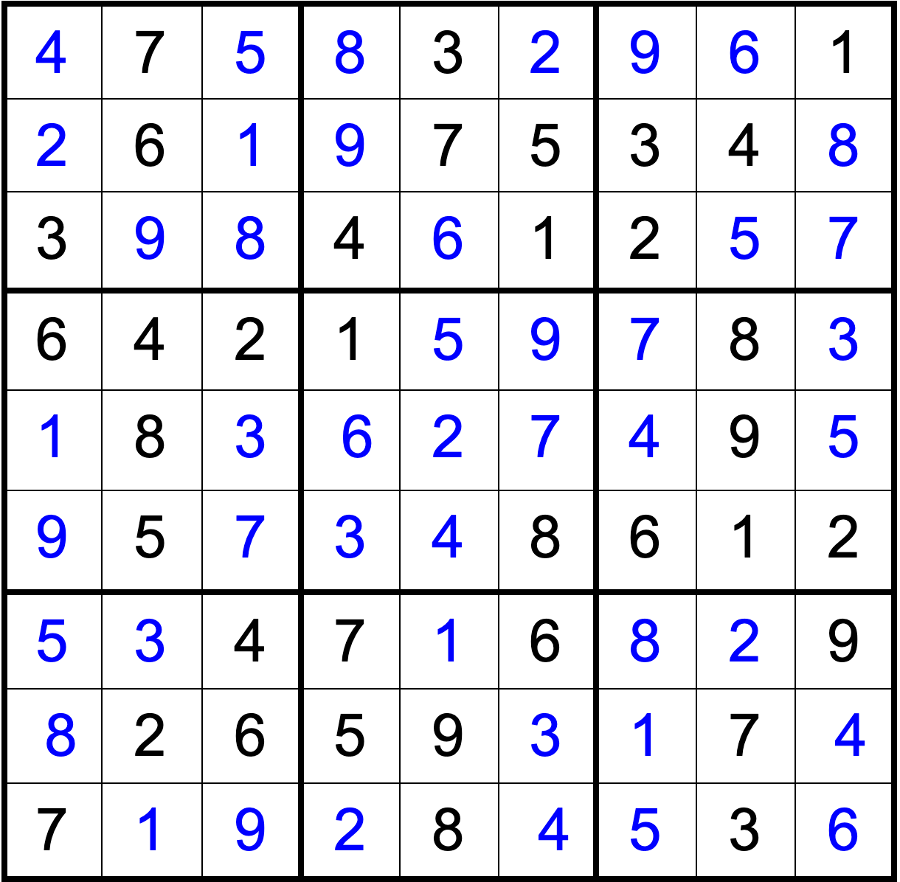

Generally, the main tactic is to show that a number can only be in one place in a square, row or column using others of that number to prove this. For example, all the 2s here are highlighted in green. The blue region is where 2s cannot be without violating the rules. Notice that in the bottom right square, there is only one square that is not blue or coloured in, so there must be a 2 there.
Now let’s try 4s. Only one position for a 4 in the top-right corner, so we fill one in.
In the bottom right corner, there is only one place for a 6. For easier Sudoku, this tactic is generally the only thing you need. However, there are other tactics.
Notes: Notes are just writing down whatever numbers can go in a cell. Here, I’ve done the top left corner. Notice that in the bottom-middle cell of this square there is only a single 9, which is the result of another tactic. Look at the intersecting row and column. Between them they contain all the numbers from 1 to 8. The only number that can go there is the 9, because any other possibility breaks the rules.
This is an ‘Easy’ sudoku so there are lots of easy-to find notes. Remember to always update your notes after doing something!
You can also use notes to check if something has the only number in its square, row or column. This is the first tactic we saw earlier, but this way is easier. The highlighted 8 and the highlighted 2 are the only ones in their square, so they can be filled. There are also several more squares that can only contain one number.
This is almost done! There are a whole lot of spaces with only one of something. However, there is one more thing I want to show you. Notice that in the two green cells, there is a pair of 3 9 s. This means that one of these must be a 3 and the other a 9, and that nothing else can be either. That means the blue cell cannot be a 3, so it must be a 6.
There are really only one-digit cells left now, and all that is left is to fill them in.
Tada! For more sudoku, try out websites like sudoku.com or check your newspaper, which usually has several. With both, try the 'Easy' sudoku first, then slowly advance.